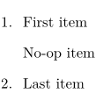

Syntax
| \nop |
Description
Used in itemizations. Prints an item without a mark, and without incrementing the item counter.
Example
- 
See also
Help from ConTeXt-Mailinglist/Forum
All issues with:
Unofficial ConTeXt Wiki mirror
Last modified: 2025-01-05
| \nop |
Used in itemizations. Prints an item without a mark, and without incrementing the item counter.
All issues with: